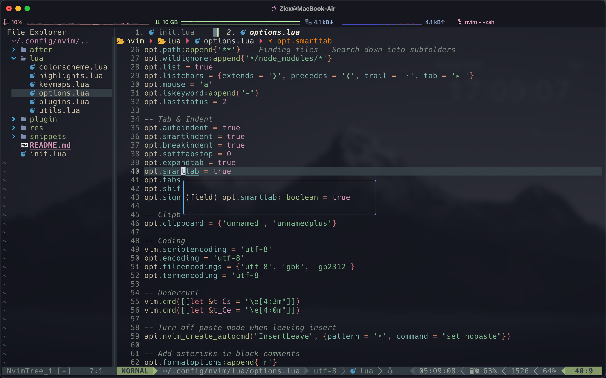
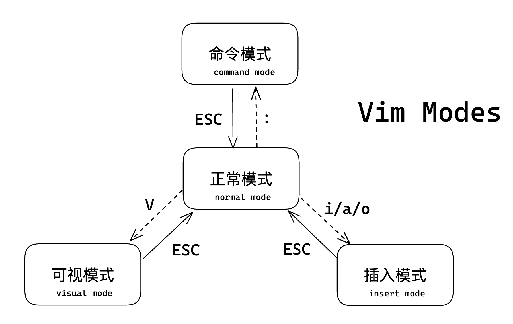
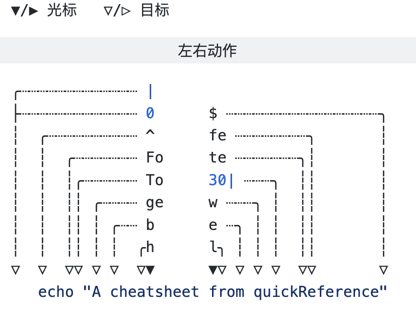
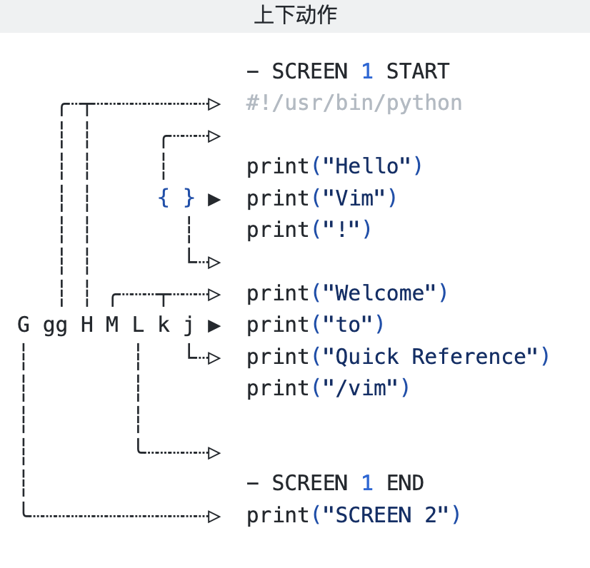

<!DOCTYPE html>
<html lang="en">
  <head>
    <meta charset="utf-8" />
    <meta name="viewport" content="width=device-width, initial-scale=1.0, maximum-scale=1.0, user-scalable=no" />

    <title>lec3 - 2023春夏实用技能拾遗</title>
    <link rel="shortcut icon" href="./favicon.ico" />
    <link rel="stylesheet" href="./dist/reset.css" />
    <link rel="stylesheet" href="./dist/reveal.css" />
    <link rel="stylesheet" href="./dist/theme/simple.css" id="theme" />
    <link rel="stylesheet" href="./css/highlight/github.css" />

    <link rel="stylesheet" href="./assets/custom.css" />

  </head>
  <body>
    <div class="reveal">
      <div class="slides"><section ><section data-markdown><script type="text/template">

<div class="middle center">
<div style="width: 100%">


# lec3：Vim&hairsp;&hairsp;/&hairsp;&hairsp;Neovim Tutorial

<hr/>

2023 年春夏学期计算机学院朋辈辅学「实用工具拾遗」课程

By [@Zicx](https://github.com/Xuer04)

<div style="text-align: right; margin-top: 1em;">
<p>2023.4.8&emsp;&emsp;&emsp;</p>
</div>

</div>
</div>

</script></section><section data-markdown><script type="text/template">

## Table of Contents

- Vim
  - 什么是Vim
  - Vim的模式
  - Vim动作与操作符
  - Vim对象
  - Vim设计哲学与理解Vim
- Neovim
  - 介绍与配置
  - 插件介绍

</script></section><section data-markdown><script type="text/template">

## Take Aways

通过这节课你可以学到什么

- **宇宙第一编辑器的真面目** <del>记事本(x</del>
- 在用到 Vim 的场景(e.g. 服务器)可以**得心应手**
- **如何打造自己的 IDE** &hairsp; \o/\o/`so coool!!`

<div style="text-align: center;">

</div>

</script></section><section data-markdown><script type="text/template">

## References

可以在这些地方获得一些有用的资源

- Vim
  - [vim.org](https://www.vim.org/)
  - [Vim Wikipedia](https://en.wikipedia.org/wiki/Vim_(text_editor))
  - [Interactive vim tutor](https://www.openvim.com/)
  - [Vim Cheat Sheet](https://vim.rtorr.com/)
- Neovim
  - [neoim.org](https://neovim.io/)
  - [Neovim Github](https://github.com/neovim/neovim)
  - [Zicx's neovim config repo](https://github.com/Xuer04/Awesome-neovim)<br>
  觉得有用的话可以给我点个star⭐️ :)

</script></section></section><section ><section data-markdown><script type="text/template">

<div class="middle center">
<div style="width: 100%">

# Part.1 什么是 Vim？

</div>
</div>

</script></section><section data-markdown><script type="text/template">

## 什么是 Vim？


**Vim - the ubiquitous text editor**

Vim是一个**开源高度可配置**的文本编辑器，仅需要几个按键便可以高效快捷地修改文本内容。

Vim的第一个版本由布莱姆·米勒在1991年发布。最初的简称是Vi IMitation，随着功能的不断增加，正式名称改成了Vi IMproved。

Vim广泛用于*nix系统中，和Emacs被并称为程序员最喜欢的编辑器


对于大多数用户来说，Vim有着一个比较陡峭的学习曲线。这意味着开始学习的时候可能会进展缓慢，但是一旦掌握一些基本操作之后，能大幅度提高编辑效率。

一个很有意思的事情，SOF 的一个帖子[How do I exit Vim?](https://stackoverflow.com/questions/11828270/how-do-i-exit-vim)从十年前到现在依然有人回复，可见Vim有多~~好用~~不友好。

</script></section><section data-markdown><script type="text/template">

## 如何学习Vim

- Vim官方提供了教程，在终端输入 ```vimtutor``` 即可进入教程
- 多练，多练，多练！！！这里给出了Zicx的一些尝试
  - 先从你熟悉的IDE或者editor开始，如JetBrains的产品或者Vscode，都有对应的Vim插件
  - 不要用鼠标，会让你产生依赖性
  - 如果你用的是qwerty布局的键盘，尽量不要看键盘
  - 从一些简单的任务开始做尝试，比如小的coding作业，或者写笔记等
  - ...

  有更好的练习方式也可以告诉Zicx :)

</script></section><section data-markdown><script type="text/template">

## 为什么要学习Vim

相信大家自己和身边有很多用Vscode、VS、JetBrains产品的同学，这些产品已经足够优秀，可以cover我们日常的编程需要了，那么我们为什么还要学习Vim呢？

在Zicx看来，有以下几点可以让你考虑来学习Vim:

- 在服务器上配置的时候，没有GUI，Vim是唯一可以使用的editor
- 你不喜欢IDE，觉得太笨重了，Vim足够轻量化
- 你追求效率，Vim足够高效
- 你比较Geek，对于捣鼓这些东西很有passion

对于Vim，见仁见智，它毕竟只是一个工具，如果用的不顺手换一个便是了

但是Zicx还是希望大家可以尝试一下这个工具，如果学习了它之后取代了你现在用的editor那Zicx会很开心！

随时欢迎大家和Zicx交流Vim的学习~ :)

</script></section></section><section ><section data-markdown><script type="text/template">

<div class="middle center">
<div style="width: 100%">

# Part.2 Vim的模式

</div>
</div>

</script></section><section data-markdown><script type="text/template">

## Vim的模式

<div style="text-align: center;">

</div>

</script></section><section data-markdown><script type="text/template">

## Vim的模式


在Vim中，用不同的模式来划分不同的操作目的和操作对象，后续我们在Vim的设计哲学中也会讨论

- **正常模式**:进入Vim时默认是正常模式，该模式下无法直接输入文本，更多的是对文本进行**浏览和管理**
- **插入模式**:该模式下可以对文本进行编辑，输入字符会实时显示出来
- **可视模式**:该模式下无法编辑文本内容，但可以根据操作需要选择特定的文本对象(词/句/段落/块)
- **命令模式**:该模式下可以输入命令来对文件进行操作(搜索/保存/退出)

</script></section><section data-markdown><script type="text/template">

## Vim的模式切换


- **正常模式**
  - 在任何模式下输入 `ESC` 即可回到正常模式
- **插入模式**
  - i/a:在当前光标之前/之后插入
  - I/A:在当前行的首部/结尾插入
  - o/O(letter):在当前行的下方/上方插入新行
  - s/S:删除光标所在字符/行并插入
- **可视模式**
  - v:进入可视化模式，当前文本选择单位为**字符**
  - V:进入可视化模式，当前文本选择单位为**行**
  - \<C-v\>:进入可视化模式，当前文本选择单位为**块**
- **命令模式**: 在正常模式下按 `:` 进入命令模式

</script></section><section data-markdown><script type="text/template">

## 命令模式

以下是一些常用的命令

- :w - 保存文件
- :q - 退出文件
- :q! - 强制退出文件
- :e filename - 编辑新的文件

替换内容

```
:%s/{pattern}/{str}/[flags]
```

- :%s/old/new - 替换第一个匹配的内容
- :%s/old/new/g - 替换所有匹配的内容
- :%s/old/new/gc - 替换所有匹配的内容并确认
- :%s/old/new/gi - 替换所有匹配的内容(忽略大小写)

</script></section><section data-markdown><script type="text/template">

## 搜索模式

搜索模式严格来说不属于Vim的一个模式，是独立的语法，常用的有以下一些指令

- /foo:向前搜索内容foo
- /foo\c:向前搜索内容foo(忽略大小写)
- ?foo:向后搜索内容foo
- /\v\d+:使用regex搜索
- n:上一个匹配项
- N:下一个匹配项

一个很神奇的指令

```
/\v^(.*)(\r?\n\1)+$ 
```

这条指令可以匹配所有的重复行，感兴趣的同学可以了解一下正则表达式(regex)

</script></section></section><section ><section data-markdown><script type="text/template">

<div class="middle center">
<div style="width: 100%">

# Part.3 Vim的动作与操作符

</div>
</div>

</script></section><section data-markdown><script type="text/template">

## Vim的动作



我们以这一句话为文本对象来介绍一下Vim中的左右移动动作

- h/l:基本的左/右移动，以一个字符为单位
- b/w:移动到上/下一个单词首部
- ge/e:移动到上/下一个单词尾部
- To/to:移动到上一个/下一个o之前/之后
- Fe/fe:移动到上一个/下一个e<br> 这里的o/e 可以是任意字符x
- 0(zero)/$:移动到当前行的首部/尾部
- ^:移动到当前行的非空白开头处

</script></section><section data-markdown><script type="text/template">

## Vim的动作



相较于左右移动操作，Vim的上下移动操作要简单一些

- j/k:基本的下/上移动，以一行为单位
- H/M/L:移动到当前窗口的上/中/下屏幕
- gg/G:移动到当前文件的第一行/最后一行
- }/{:移动到当前行的下一个/上一个空行
- \<C-u\>/\<C-d\>:移动上/下半页，以屏幕的半页为单位
- :n:移动到当前文件的第 n 行<br>(在命令模式下很好用)
- ⭐ **可以搭配数字一起使用，例如3j就是向下移动3行**

</script></section><section data-markdown><script type="text/template">

## Vim的操作符

正常模式下，有以下操作符(operators)

- d:delete，删除(Vim中的删除其实是**剪切**)
- r:replace，替换
- y:yank，复制
- p:paste，粘贴
- c:change，更改(删除然后插入)
- g~: 切换大小写
- gU/gu:修改为大/小写
- \>/\<:右/左缩进
- .:重复上一个操作
- u:undo，撤消
- x:剪切

Vim的操作符可以看作是**最小的操作单元**，需要配合**动作或者文本对象**一起使用

</script></section><section data-markdown><script type="text/template">

## 操作符和动作组合

操作符和动作的组合格式如下:

```
[数字] <运算符> <动作>
<运算符> [数字] <动作>
```

通过几个例子来理解一下

1. `d5j`:向下删除5行
2. `>4k`:向上右缩进4行
3. `6yy/y6y`:复制6行
4. `ggyG`:复制整个文档

为了方便，我们可以自定义映射快捷键使得全选文本更加方便

```lua
vim.keymap.set("n", "<C-a>", "gg<S-v>G")
```

</script></section></section><section ><section data-markdown><script type="text/template">

<div class="middle center">
<div style="width: 100%">

# Part.4 Vim对象

</div>
</div>

</script></section><section data-markdown><script type="text/template">

## Vim对象

在Vim中有一些基本的文本对象(text objects)

- p:paragraph，段落
- w:word，单词
- s:sentence，句子
- b:block，文本块
- [({\<:[]、() 或 {} 块
- '"`:带引号的字符串
- t:tag，HTML标签块

文本范围

- i:inner，文本内部
- a:around，文本周围

</script></section><section data-markdown><script type="text/template">

## Vim对象操作

通过以下的例子来认识一下文本对象操作(x=v,d,y,c etc.)

- xi":操作引号内的文本内容
- xa":操作引号内的文本内容(包括引号)
- xi[:操作括号内的文本内容
- xa[:操作括号内的文本内容(包括括号)
- xiw:操作内词
- xaw:操作外词(包括词的周围)
- xip:操作内段落
- xap:操作外段落

一个例子

- yap: 复制一整个段落(包括换行符)

要了解更多关于Vim文本对象的信息，可以输入 `:help text-objects` 查看

</script></section></section><section ><section data-markdown><script type="text/template">

<div class="middle center">
<div style="width: 100%">

# Part.5 Vim设计哲学与理解Vim

</div>
</div>

</script></section><section data-markdown><script type="text/template">

## Vim设计哲学


Vim的很多特性其实都来自于它的设计哲学

- **自顶向下**:Vim其实是*模块化*的，从模式到操作符和动作，可以更加高效地处理文本
- **手速跟上思维**:Vim的很多特性都有一定的历史影响，但都是为了提高效率，让手速跟上你的思维
- **高度自定义**:不同于其他编辑器，Vim的配置基于配置文件，修改和迁移非常方便
- **语义化操作**:Vim中的绝大部分的指令都是语义化的，这同样也是为了提高效率，在操作的时候不需要去记忆指令
- **Keep it sample**:让每一个按键发挥固有的作用<br>
    *这一条是Zicx自己加上去的，应该不算Vim开发者的设计哲学*

</script></section><section data-markdown><script type="text/template">

## 如何理解Vim

Vim的指令既然是语义化操作，那么我们该如何理解Vim的语义化

- **动词**代表了我们打算对文本进行什么样的操作(d/r/c/y/v)
- **名词**代表了我们即将处理的文本，引号或者各种括号所包含的文本称作一个文本块(w/s/p/t)
- **介词**界定了待编辑文本的范围或者位置(i/a/t/f)
- **数词**指定了待编辑文本对象的数量，从这个角度而言，数词也可以看作是一种介词

有了这些基本的语言元素，我们就可以着手构造一些简单的命令了。文本编辑命令的基本语法如下：

```
动词 介词/数词 名词
```

另外，数词也可以修饰动词，表示将操作执行 n 次

</script></section><section data-markdown><script type="text/template">

## 如何理解Vim

通过一些例子来学习一下语义化操作

```
dip # 删除一个段落: delete inside paragraph
vis # 选取一个句子: visual select inside sentence
ciw # 修改一个单词: change inside word
caw # 修改一个单词: change around word
dtx # 删除文本直到字符“x”(不包括字符“x”): delete to x
dfx # 删除文本直到字符“x”(包括字符“x”): delete forward x
```

与数字搭配使用

```
c3w  # 修改三个单词：change three words
d2w  # 删除两个单词：delete two words
2dw # 两次删除单词(等价于删除两个单词): twice delete word
3x  # 三次删除字符(等价于删除三个字符): three times delete character
```

</script></section></section><section ><section data-markdown><script type="text/template">

<div class="middle center">
<div style="width: 100%">

# Part.6 Neovim介绍与配置

</div>
</div>

</script></section><section data-markdown><script type="text/template">

## Neovim介绍


Neovim是一个旨在积极重构Vim源代码以实现以下目标的**开源项目**

- **简化维护**以提高错误修复和功能合并的速度
- 将**工作拆分**给多个开发人员
- 无需对核心源码进行任何修改即可实现**新的/现代用户接口**
- 通过基于协程的**新插件体系**结构提高可扩展性，插件将支持用任何编程语言编写，而不依赖于编辑器


在Zicx看来，Neovim的以下特性让大家非常值得尝试它

- 支持用Lua配置，速度极快
- 插件生态丰富，功能齐全
- 配置简单，小白友好

</script></section><section data-markdown><script type="text/template">

## Neovim配置

在介绍Neovim的配置之前，我们简单的来介绍一下Vim的配置<br>Vim的配置文件可以有两个，分别代表**系统配置**和**用户配置**，它们的路径为 `/etc/.vimrc` 和 `~/.vimrc`，一般我们使用用户配置

```shell
touch ~/.vimrc
vim ~/.vimrc
```

一些简单的配置

```
set syntax=on      " 语法高亮
set number         " 显示行号
set showmatch      " 括号匹配
set autoindent     " 自动缩进
set tabstop=4      " Tab键的宽度
set mouse=a        " 鼠标支持
colorscheme nord   " 设置主题
```

</script></section><section data-markdown><script type="text/template">

## Neovim配置

在UNIX系统中，一般会有一个特定的文件夹来存放配置文件，默认路径是 📁```~/.config/```，neovim的配置文件也位于这个文件夹下面

Neovim是Vim的分叉项目，同样也支持Vim的配置脚本语言Vimscript，但使用Lua语言作为配置语言更加简洁且性能更好，整体配置的结构如下:

```
~/.config/nvim/
├── init.lua                # import neovim modules
├── after/plugin            # plugin configs
│   ├── alpha.rc.lua
│   └── ...
├── lua                     # core neovim configs
│   ├── colorscheme.lua
│   ├── keymaps.lua
│   ├── plugins.lua
│   └── ...
└── snippets                # code snippets
    └── friendly-snippets
```

</script></section><section data-markdown><script type="text/template">

## Neovim配置

我们有两种方式来配置自己的Neovim &hairsp; (Zicx会推荐第一种，但确实很花时间

- 自己从头开始配置
  - 优点是自己熟悉配置，使用顺手
  - 缺点是前期探索成本比较高
- 基于一个现成的Neovim项目
  - 优点是配置齐全，功能完善
  - 缺点是你需要适应它的功能和按键设定
  - 当然你也可以魔改它的项目从而符合自己的使用习惯

一些很不错的Neovim项目和资源

- [SpaceVim: https://spacevim.org/](https://spacevim.org/)
- [LunarVim: https://www.lunarvim.org/](https://www.lunarvim.org/)
- [AstroNvim: https://astronvim.com/](https://astronvim.com/)

</script></section><section data-markdown><script type="text/template">

## Neovim插件

Neovim的插件生态非常丰富！！无法详尽地给大家介绍各个插件，以下列举了一些必不可少的插件，大家也可以去这里找更多插件 [Awesome Neovim](https://project-awesome.org/rockerBOO/awesome-neovim)

- [wbthomason/packer.nvim](https://github.com/wbthomason/packer.nvim) - Neovim的插件管理器
- [nvim-lualine/lualine.nvim](https://github.com/nvim-lualine/lualine.nvim) - 状态栏显示
- [L3MON4D3/LuaSnip](https://github.com/L3MON4D3/LuaSnip) - 集成代码片段
- [hrsh7th/nvim-cmp](https://github.com/hrsh7th/nvim-cmp) - Neovim的代码补全引擎
- [neovim/nvim-lspconfig](https://github.com/neovim/nvim-lspconfig) - Neovim的LSP配置
- [glepnir/lspsaga.nvim](https://github.com/glepnir/lspsaga.nvim) - LSP的扩展，UI非常好看
- [williamboman/mason.nvim](https://github.com/williamboman/mason.nvim) - Neovim的包管理器
- [nvim-telescope/telescope.nvim](https://github.com/nvim-telescope/telescope.nvim) - 支持FZF的查询列表
- [lewis6991/gitsigns.nvim](https://github.com/lewis6991/gitsigns.nvim) - Neovim集成Git
- [jose-elias-alvarez/null-ls.nvim](https://github.com/jose-elias-alvarez/null-ls.nvim) - 代码高亮，代码诊断提示
- [kyazdani42/nvim-web-devicons](https://github.com/kyazdani42/nvim-web-devicons) - 提供unicode图标支持

</script></section></section><section ><section data-markdown><script type="text/template">

<div class="middle center">
<div style="width: 100%">

# Part.7 总结

</div>
</div>

</script></section><section data-markdown><script type="text/template">

## 总结

- Vim
  - 什么是Vim(记事本?)
  - Vim的模式(四种模式，模式之间如何切换)
  - Vim动作与操作符(左右动作、上下动作，与操作符的组合)
  - Vim对象(文本对象和范围)
  - Vim设计哲学与理解Vim(语义化的操作)
- Neovim
  - 介绍与配置(开源项目，如何配置)
  - 插件介绍(...)

</script></section><section data-markdown><script type="text/template">

<div class="middle center">
<div style="width: 100%">

# 谢谢大家

<hr/>

**Questions?**

</div>
</div>
</script></section></section></div>
    </div>

    <script src="./dist/reveal.js"></script>

    <script src="./plugin/markdown/markdown.js"></script>
    <script src="./plugin/highlight/highlight.js"></script>
    <script src="./plugin/zoom/zoom.js"></script>
    <script src="./plugin/notes/notes.js"></script>
    <script src="./plugin/math/math.js"></script>
    <script>
      function extend() {
        var target = {};
        for (var i = 0; i < arguments.length; i++) {
          var source = arguments[i];
          for (var key in source) {
            if (source.hasOwnProperty(key)) {
              target[key] = source[key];
            }
          }
        }
        return target;
      }

      // default options to init reveal.js
      var defaultOptions = {
        controls: true,
        progress: true,
        history: true,
        center: true,
        transition: 'default', // none/fade/slide/convex/concave/zoom
        slideNumber: true,
        plugins: [
          RevealMarkdown,
          RevealHighlight,
          RevealZoom,
          RevealNotes,
          RevealMath
        ]
      };

      // options from URL query string
      var queryOptions = Reveal().getQueryHash() || {};

      var options = extend(defaultOptions, {"transition":"slide","transitionSpeed":"fast","center":false,"slideNumber":"c/t","width":1000}, queryOptions);
    </script>

    <script src="https://cdn.tonycrane.cc/heti/heti.js"></script>
    <script src="./assets/heti_worker.js"></script>

    <script>
      Reveal.initialize(options);
    </script>
  </body>
</html>
